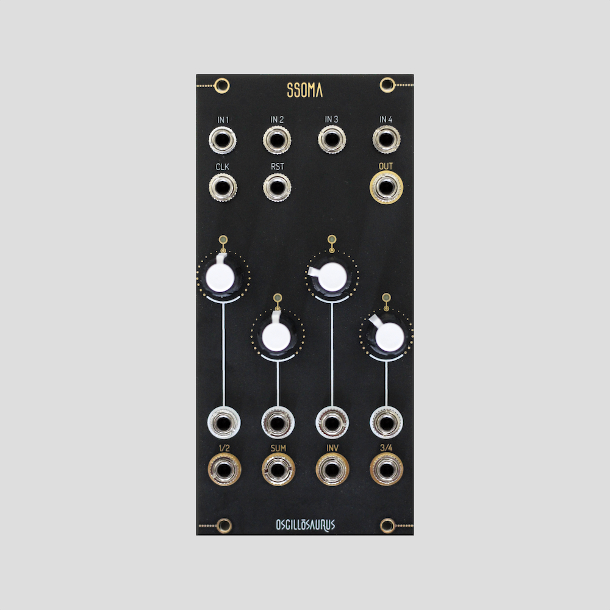
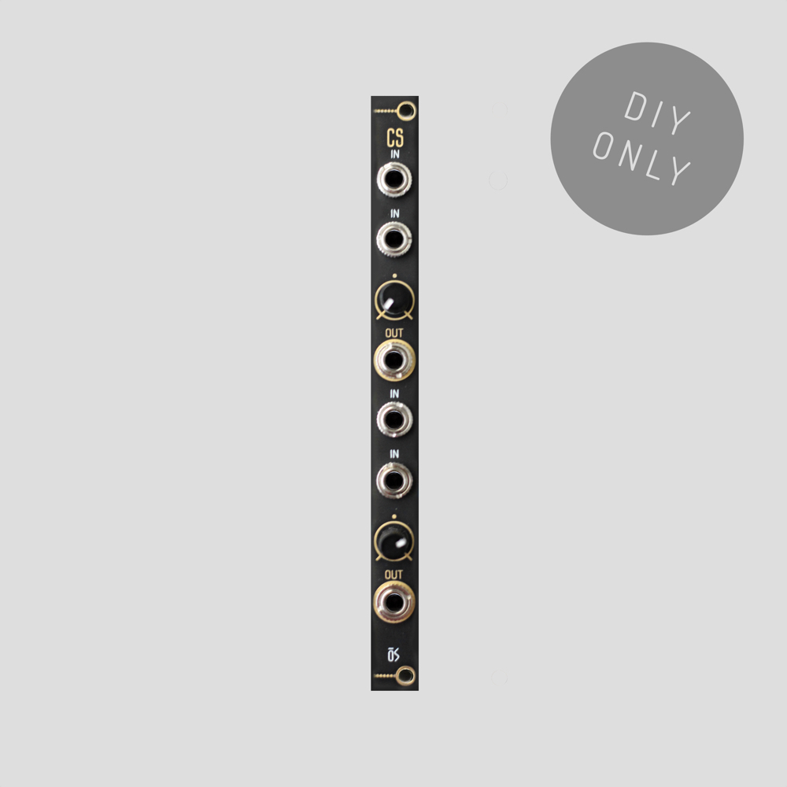
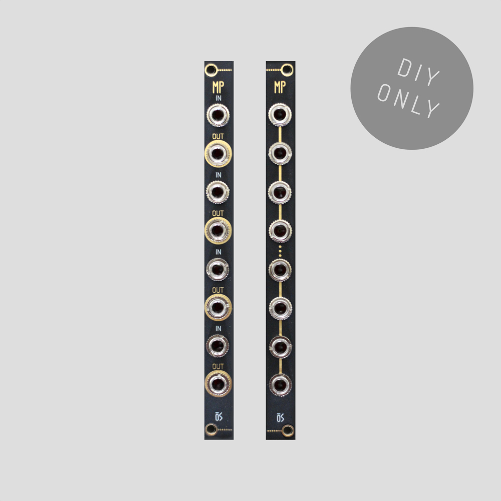

OSCILLOSAURUS / MODULES
Modules.
Original Oscillosaurus modules, passive utilities and experimental hardware.
SSOMA
Multifunction Voltage Processor
A multifunction Eurorack utility combining voltage processing, sequencing, mixing, attenuation and modulation functions.

Crosscaler
Passive Attenuator / Crossfader
A compact passive utility for attenuation and crossfading between signals in just 2 HP.

Massive Passive
Configurable Passive Utility
A compact configurable passive Eurorack utility designed for simple signal routing and processing without consuming power.
